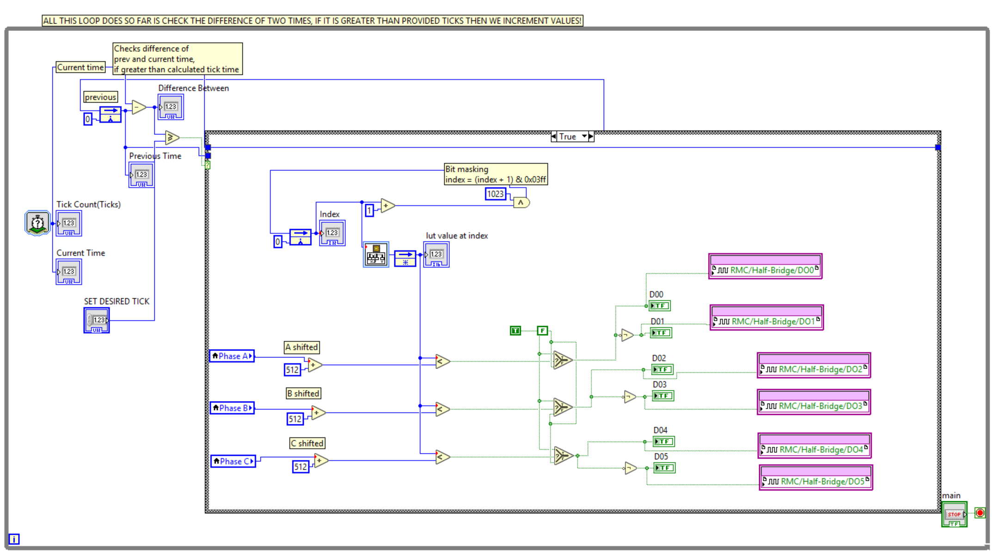
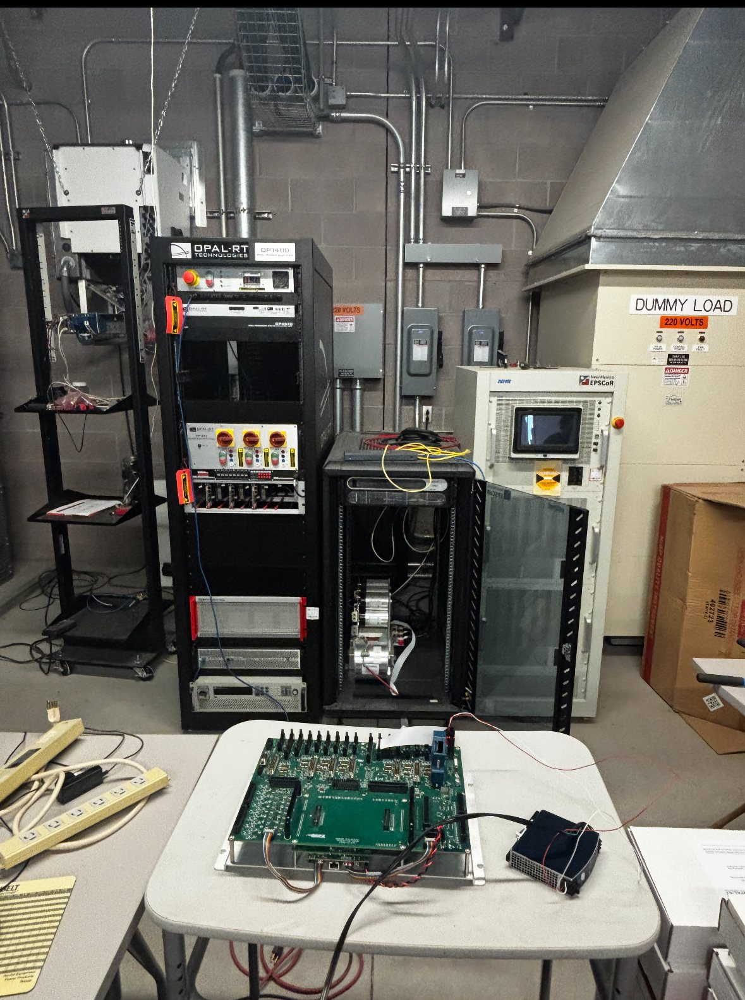
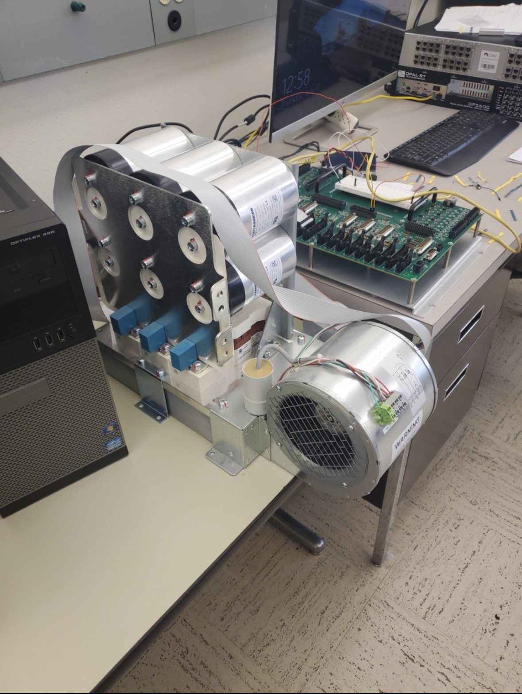
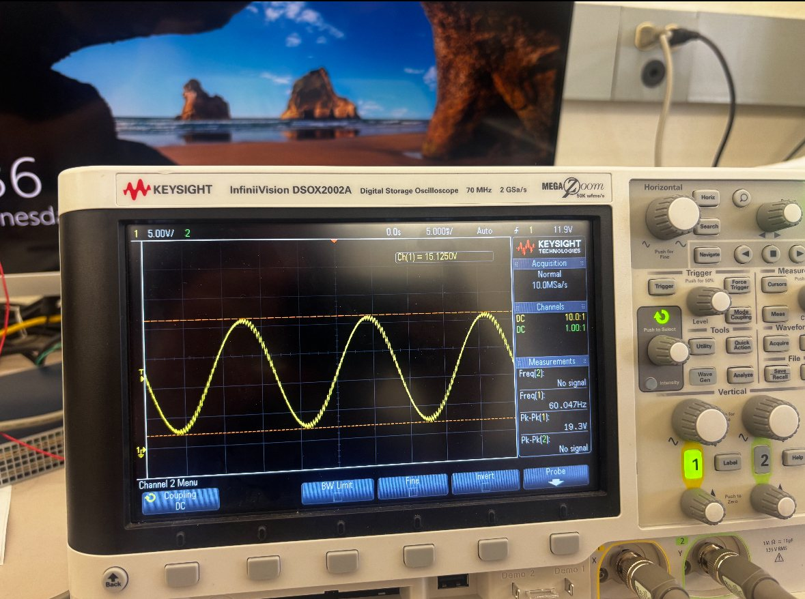

Projects
Satellite and power electronics work at COSMIAC and UNM Electrical and Computer Engineering
At COSMIAC
COSMIAC is the University of New Mexico School of Engineering’s aerospace research center. I work there with a team of students and engineers on software-defined radio, embedded systems, and satellite simulation, including orbital dynamics models in Ansys STK.


Power electronics at UNM ECE
Before COSMIAC, I was a research assistant in UNM’s Department of Electrical and Computer Engineering, designing real-time FPGA control for a three-phase power inverter with LabVIEW and National Instruments hardware.

(opens full size)
(opens full size)
(opens full size)
(opens full size)